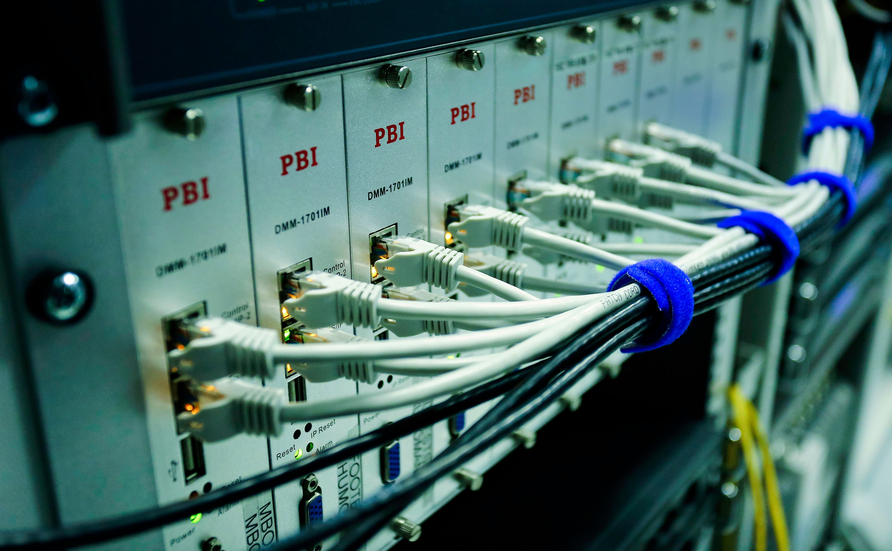

Network Types
Computer networks are classified according to their size, coverage, and purpose.
LAN
A Local Area Network connects computers within a limited area such as a home, office, or school.
MAN
A Metropolitan Area Network connects multiple LANs across a city or metropolitan area.
WAN
A Wide Area Network connects computers across countries and continents. The Internet is the largest WAN.
PAN
A Personal Area Network connects devices within a few metres, such as smartphones, laptops, and smartwatches.
CAN
A Campus Area Network links several buildings within a university, hospital, or business campus.
SAN
A Storage Area Network provides high-speed access to shared storage devices used in data centres.